Проходите интересные тесты по Вашим любимым
сериалам, фильмам и мультфильмам
и узнайте настолько хорошо Вы их знаете.
 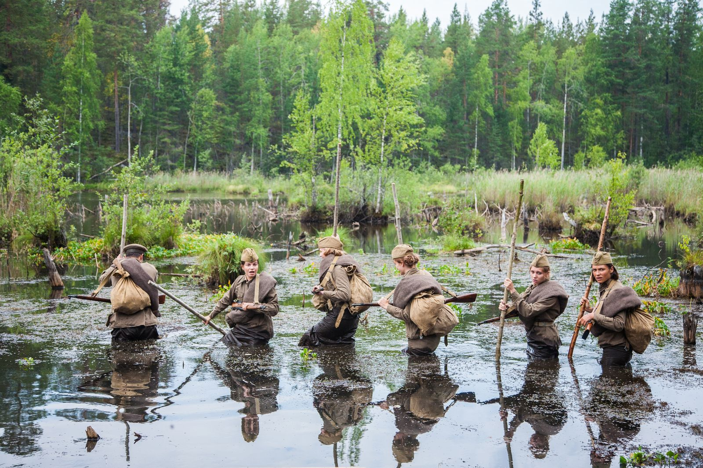
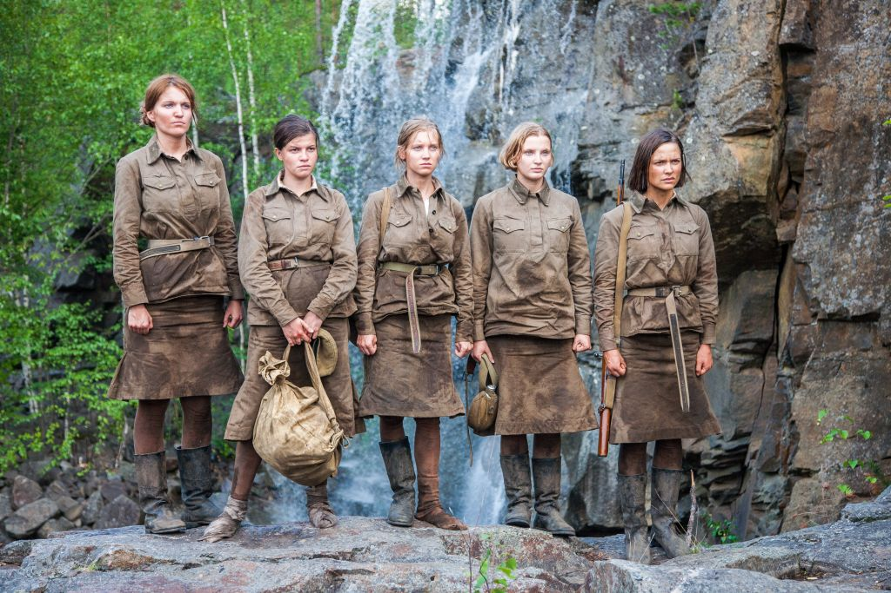
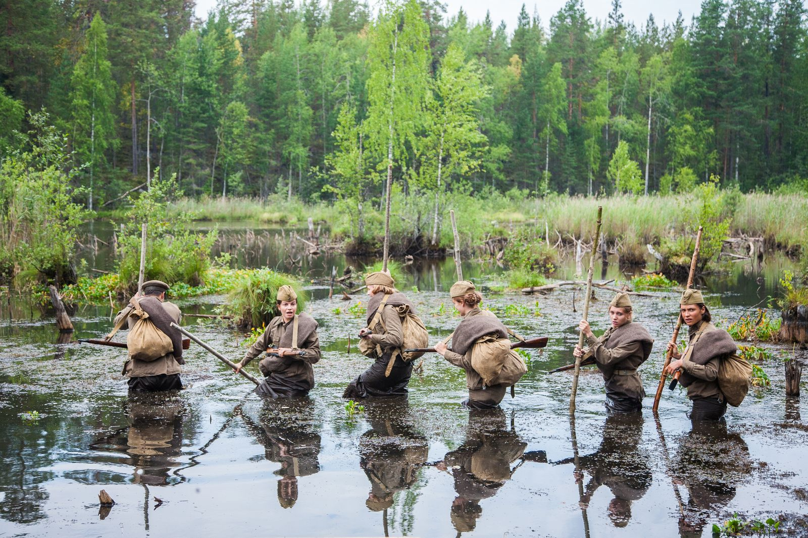
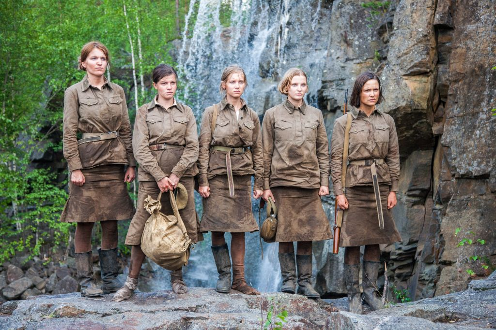

Краткое описание:
Май 1942 года. В самый разгар Великой Отечественной войны вдалеке от линии фронта у забытого богом разъезда
немцы выбрасывают десант с целью пробраться на Кировскую железную дорогу и Беломорско-Балтийский канал.
Это не обычные солдаты-пехотинцы, а опытные тренированные диверсанты, элита войск СС. А против них —
старшина Васков и пять девчонок-зенитчиц. Казалось бы, бой местного значения, но на кону — стратегически
важная транспортная aртерия, соединяющая значимые центры страны. Смогут ли старшина и его хрупкие новобранцы
предотвратить нацистскую диверсию, и какой ценой?

 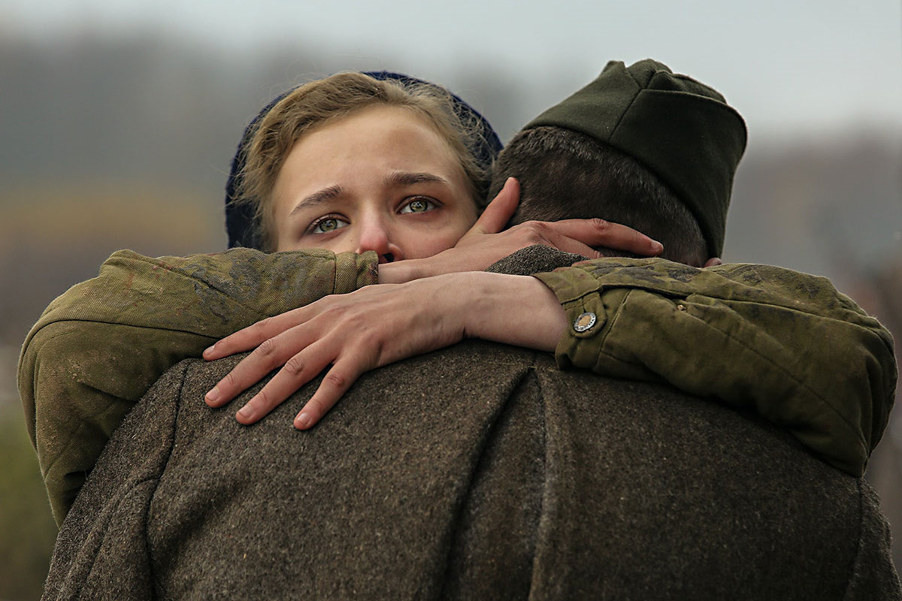
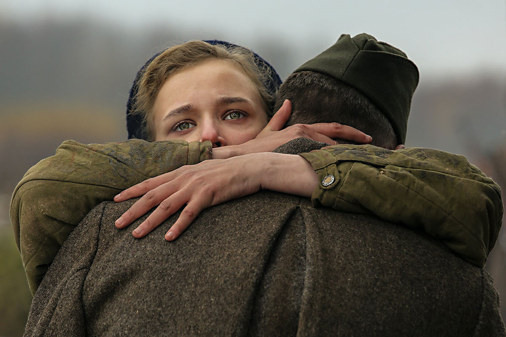Краткое описание:
Осень 1941 года. В подольских училищах проходят основательную подготовку будущие командиры Красной Армии.
Большинству еще нет и двадцати лет: они учатся, дружат, влюбляются, строят планы, но когда поступает
неожиданный приказ выдвигаться на передовую, они идут – на смерть и бессмертие. Немцы прорываются к
Москве: необходимо мобилизовать все силы, лишь бы задержать противника на пять-шесть дней до подхода
резервов Ставки. Вместо этого защитникам Ильинского рубежа удается продержаться 12 дней. После неравных
боев из трех с половиной тысяч курсанто возвращается менее тысячи. За свою короткую юность главные герои
успевают пережить первую любовь, испытать на прочность мужскую дружбу и спасти Москву, не подпустив к ней врага.


 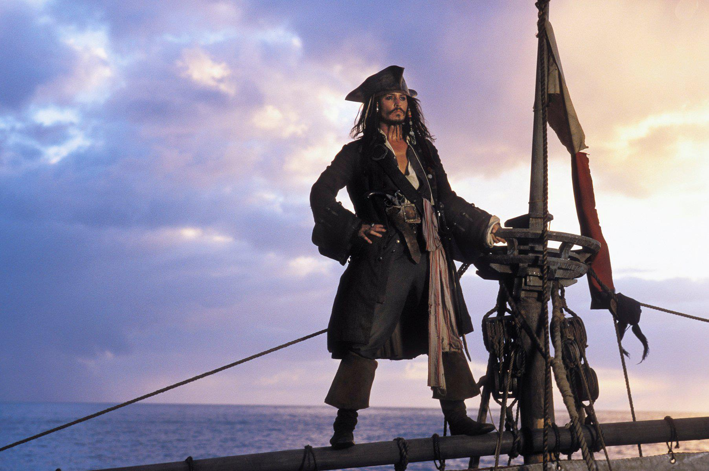
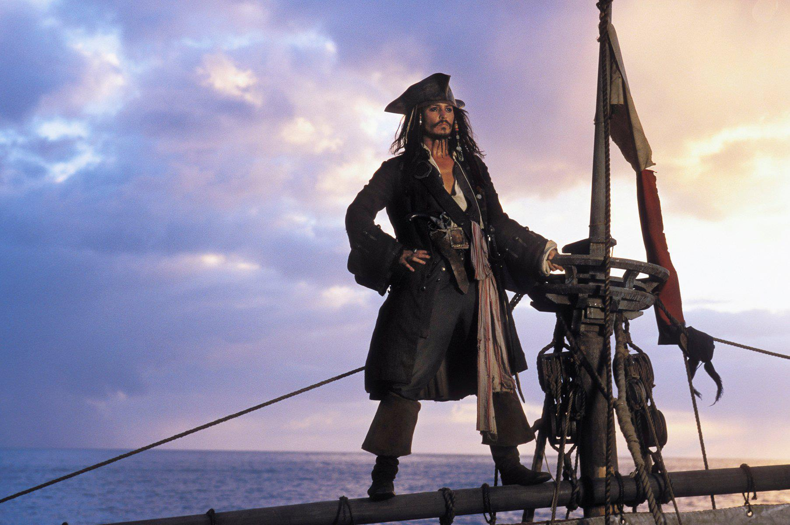Краткое описание:
Жизнь харизматичного авантюриста, капитана Джека Воробья, полная увлекательных приключений, резко меняется,
когда его заклятый враг капитан Барбосса похищает корабль Джека Черную Жемчужину, а затем нападает на Порт
Ройал и крадет прекрасную дочь губернатора Элизабет Свонн.
Друг детства Элизабет Уилл Тернер вместе с Джеком
возглавляет спасательную экспедицию на самом быстром корабле Британии, чтобы вызволить девушку и заодно
отобрать у злодея Черную Жемчужину. Вслед за этой парочкой отправляется амбициозный коммодор Норрингтон,
который к тому же числится женихом Элизабет.
Однако Уилл не знает, что над Барбоссой висит вечное проклятие,
при лунном свете превращающее его с командой в живых скелетов. Проклятье будет снято лишь тогда, когда
украденное золото Ацтеков будет возвращено пиратами на старое место.


Краткое описание:
Телеэкранизация классического романа Федора Михайловича Достоевского. «Непарадный» Санкт-Петербург XIX
века. Существование на грани с нищетой вынужден вести гордый и не лишенный способностей студент Родион
Раскольников. Куда больше, чем собственная бедность, его мучает положение его доброй матери и сестры Дуни,
которая из расчета собирается выйти замуж за недостойного человека. Кроме того, Раскольников со скрытой болью
наблюдает картины из жизни городских нищих. Он знакомится с семьей отчаявшегося пьяницы Мармеладова, чья
дочь Сонечка по «желтому билету живет». В стремлении доказать самому себе, что он не «тварь дрожащая»,
Раскольников планирует убийство и ограбление жадной старухи-процентщицы. Он уверен, что преступники обычно
попадаются из-за собственной слабости, но ему-то удастся вынести бремя преступления. Или нет?

 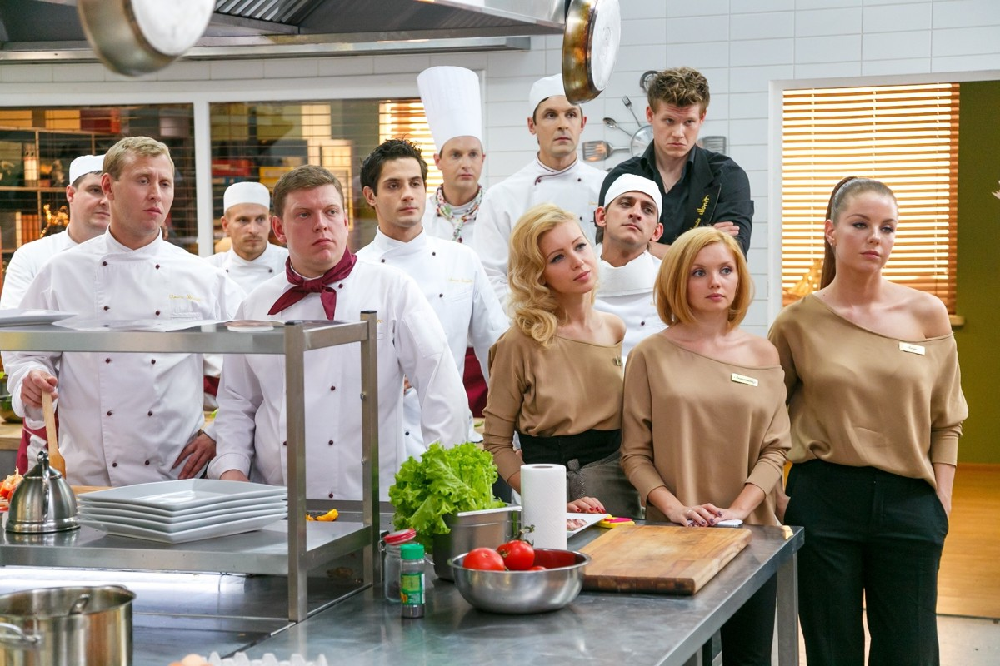
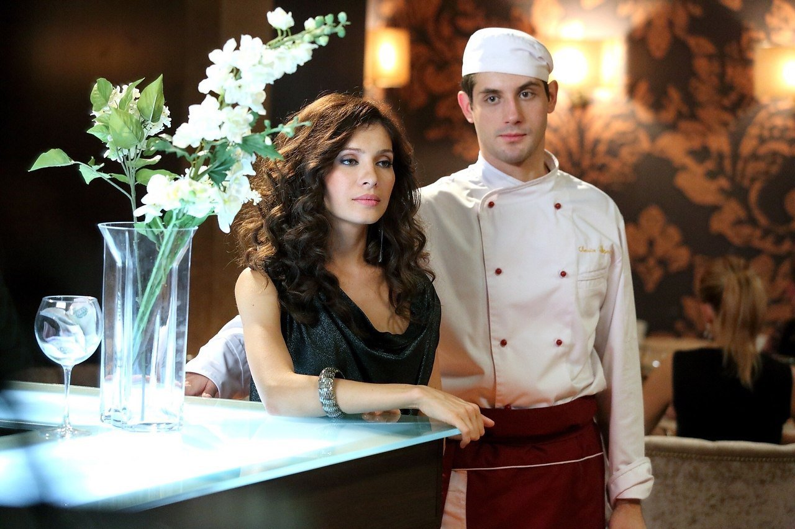
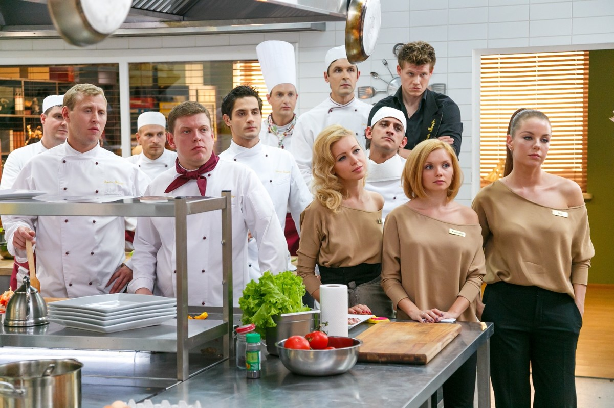
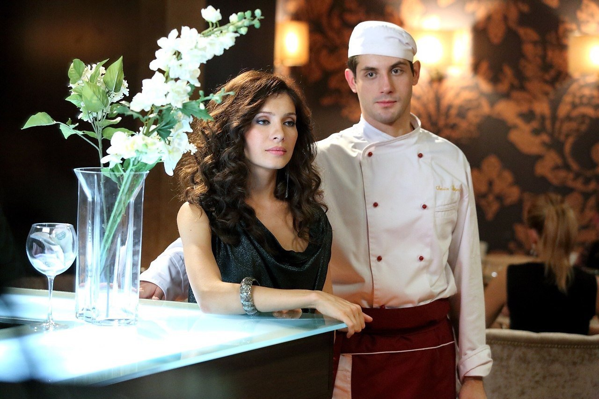Краткое описание:
«Во все времена еда была рядом с людьми. Она искушает, вдохновляет, восхищает, отвращает. Но человек не может
без еды, а значит тот, кто создает еду, может управлять миром...». Так думал Максим Лавров, когда шел
осуществлять свою мечту – устраиваться поваром в один из самых дорогих ресторанов столицы.
Мечта сбылась, вот только на деле все вышло не так вкусно. Шеф-повар ресторана Виктор Баринов – настоящая
звезда гастрономического бомонда, знающая как угодить взыскательной публике. Оборотная сторона этого идеального
образа – злоупотребление алкоголем, страсть к азартным играм и невыносимый характер. В гневе Баринов страшен,
в загуле – неукротим.
Арт-директор Виктория Гончарова – настоящая снежная королева, карьеристка с ледяным сердцем, однако именно с
ней Макс проводит ночь до того, как пойти на новую работу. А вся команда поваров только и ждет промашки новичка,
чтобы от души посмеяться.
 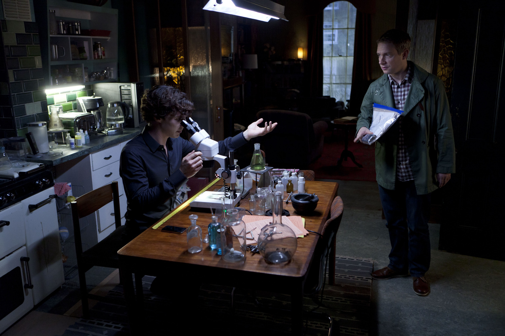
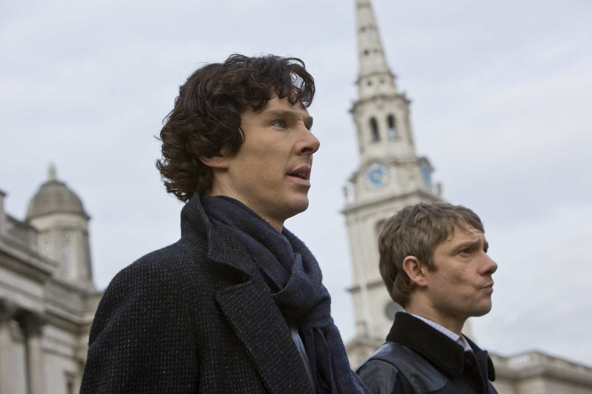
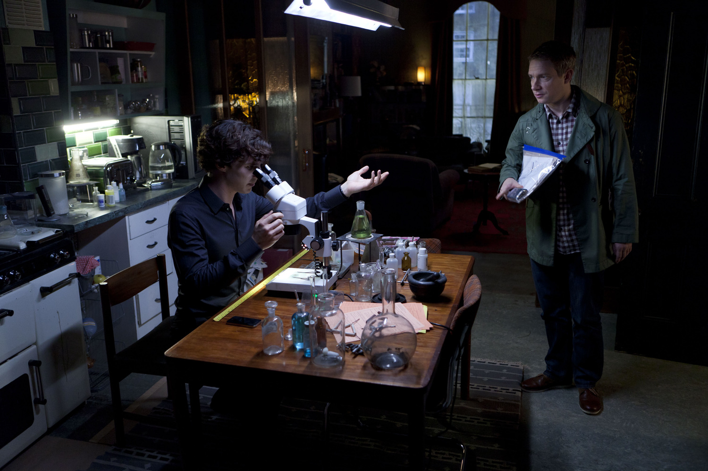
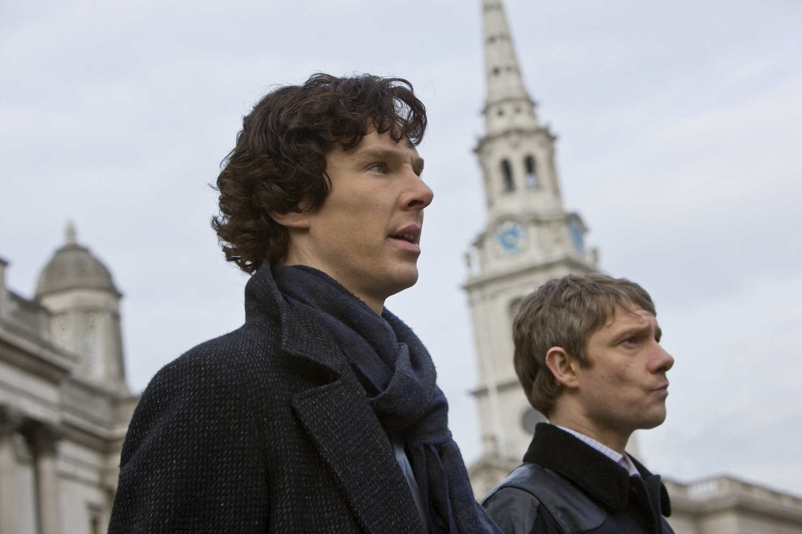Краткое описание:
Что, если бы встреча Шерлока Холмса и доктора Ватсона состоялась бы не в прежние времена, а в современном мире?
Подружились бы они, остались бы хорошими приятелями, как бы расследовали запутанные дела? Обстоятельства знакомства
двух друзей перенесены в наше время. И расследовать им приходится преступления, в которых иногда замешаны
психологические приёмы и высокие технологии. Да и преступники стали совсем другими – более коварными, циничными и
разбирающимися в компьютере и мобильных приложениях. Нынешняя миссис Хадсон заметно изменилась, живя в другом,
несвойственном для её мире. Но она до сих пор с трепетом относится к порядку. Поэтому не раз выражает протест, если
постояльцы переходят границы позволенного. А Шерлоку и Ватсону, как всегда, достаётся работа по расследованию
таинственных преступлений.
 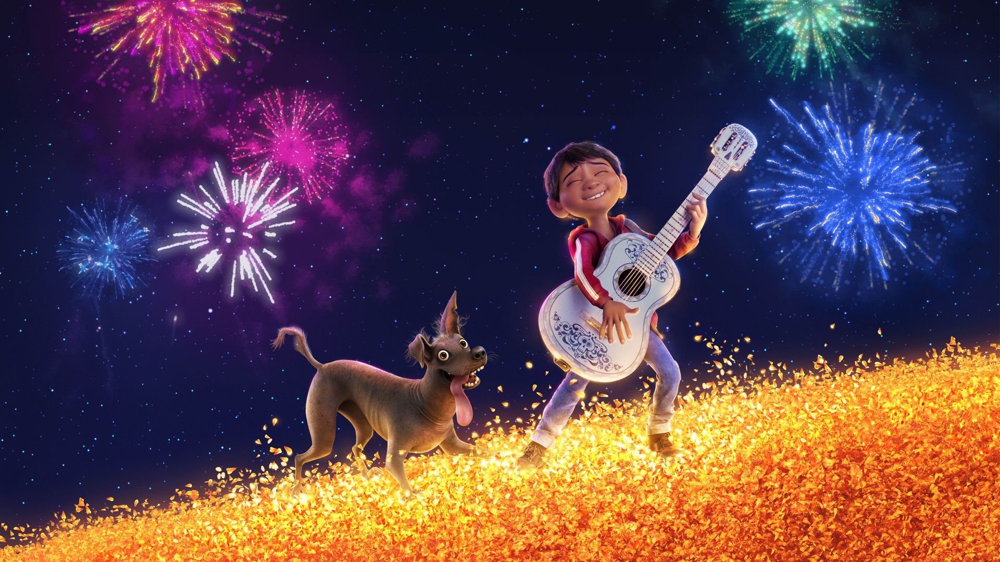
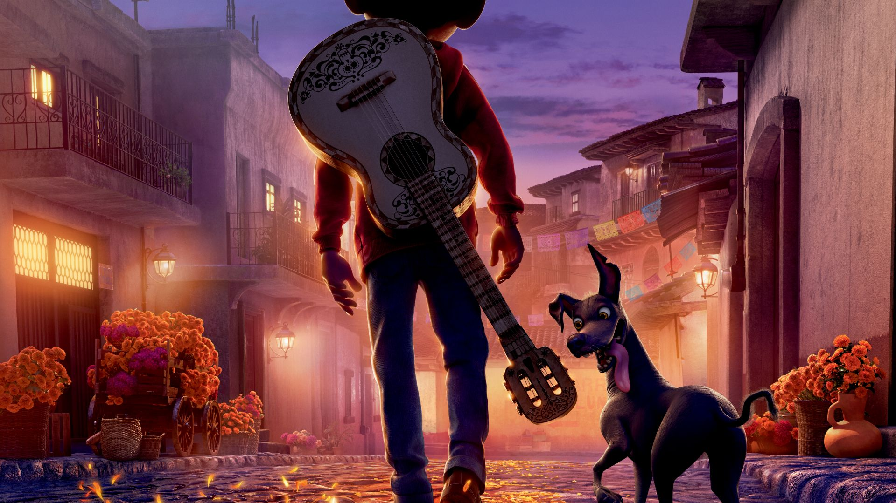
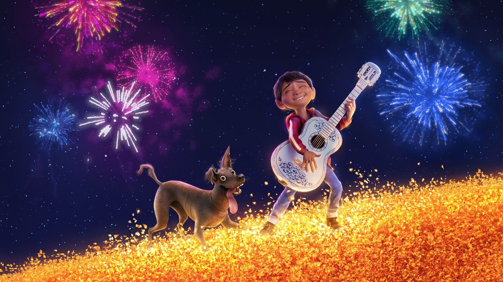
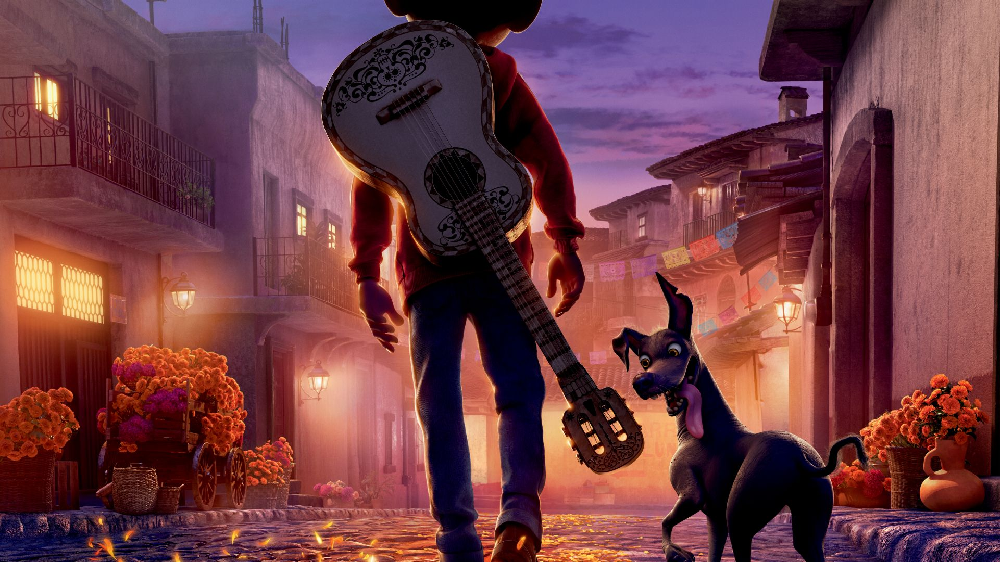

Краткое описание:
12-летний Мигель живёт в мексиканской деревушке в семье сапожников и тайно мечтает стать музыкантом. Тайно,
потому что в его семье музыка считается проклятием. Когда-то его прапрадед оставил жену, прапрабабку Мигеля,
ради мечты, которая теперь не даёт спокойно жить и его праправнуку. С тех пор музыкальная тема в семье стала
табу. Мигель обнаруживает, что между ним и его любимым певцом Эрнесто де ла Крусом, ныне покойным,
существует некая связь. Паренёк отправляется к своему кумиру в Страну Мёртвых, где встречает души предков.
Мигель знакомится там с духом-скелетом по имени Гектор, который становится его проводником. Вдвоём они
отправляются на поиски де ла Круса.

 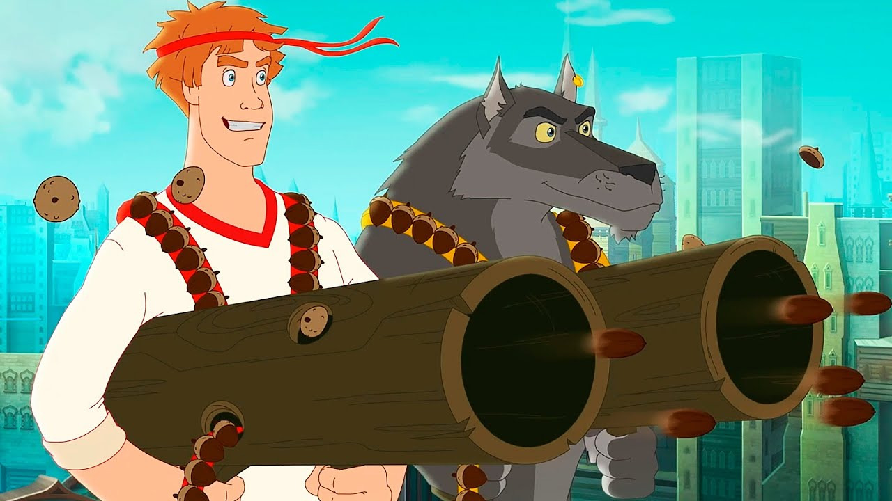
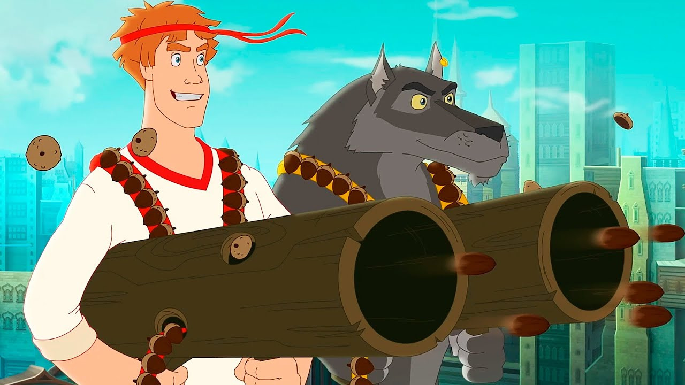Краткое описание:
В некотором царстве, в некотором государстве жила-была царская дочь Василиса. И всем она была хороша –
и красива, и умна, да только замуж выходить не хотела. И решил тогда царь выдать её за первого встречного.
А первым встречным оказывается Иван из соседнего царства… Но, чтобы стать мужем царской дочки, нужно Ивану
пройти сказочное испытание. А приказал ему царь-батюшка пойти Ивану туда «не знаю — куда» и найти «то, не
знаю что». Отправился Иван со своим помощником Серым Волком в Тридевятое царство. А Кот Учёный рассказал
ему, что есть один колодец из которого доносятся загадочные звуки, и дал с собой в дорогу волшебное зеркало…

 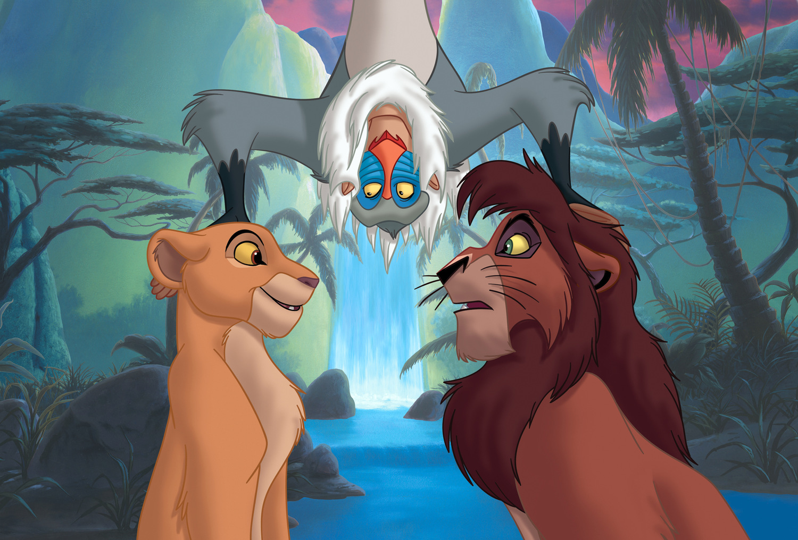
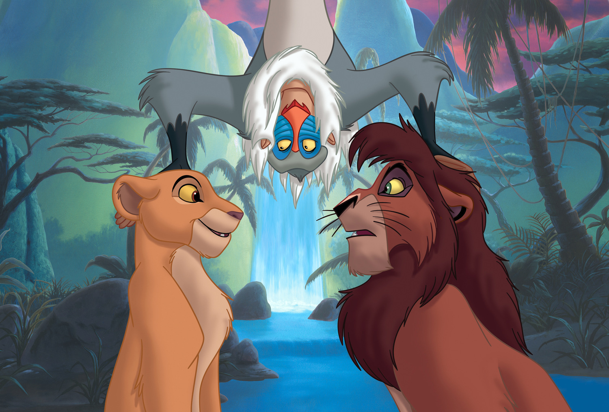Краткое описание:
У величественного Короля-Льва Муфасы рождается наследник по имени Симба. Уже в детстве любознательный
малыш становится жертвой интриг своего завистливого дяди Шрама, мечтающего о власти.
Симба познаёт горе утраты, предательство и изгнание, но в конце концов обретает верных друзей и находит
любимую. Закалённый испытаниями, он в нелёгкой борьбе отвоёвывает своё законное место в «Круге жизни»,
осознав, что значит быть настоящим Королём.
Контактная иноформация
Орлова Дарья Сергеевна
Официальная почта: filmfanoff@gmail.com